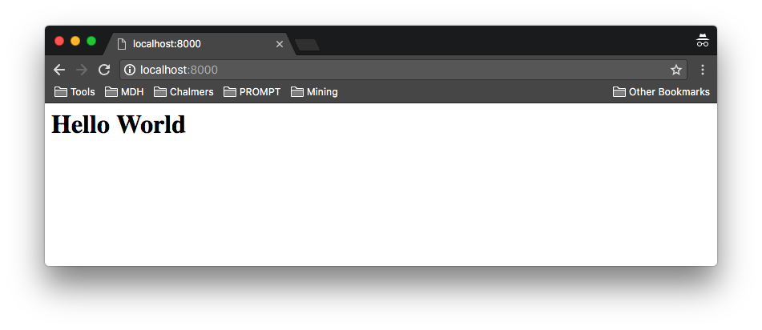
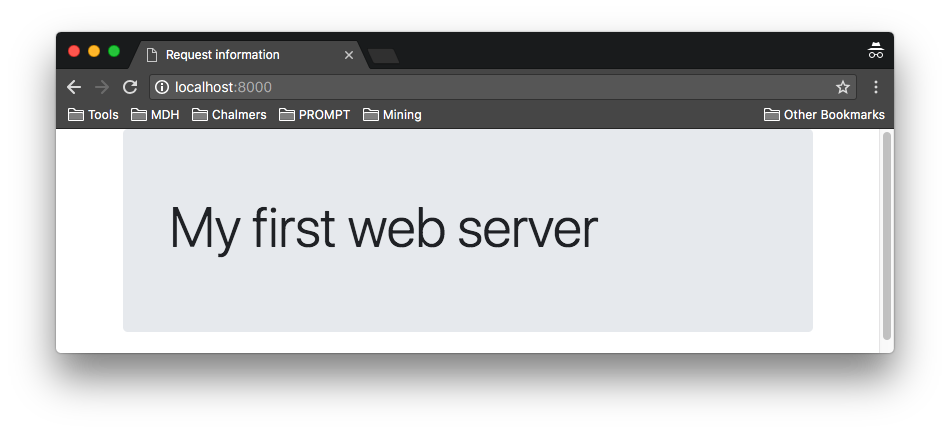
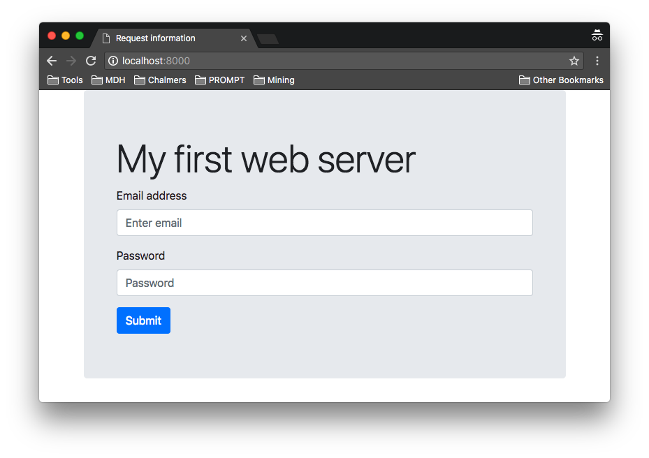
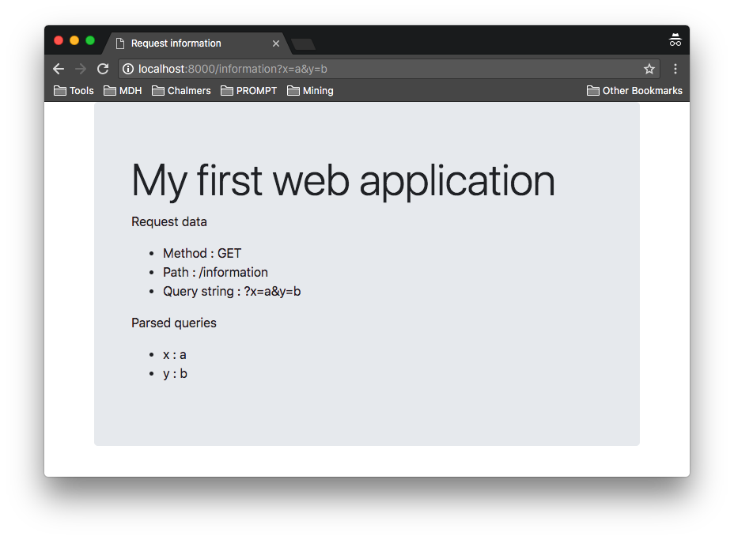

To secure a web application — or find weaknesses in one — you first need to understand how it works. This exercise builds that understanding from the ground up, using node.js: how a browser and a server talk to each other, how to serve static files, how to send information back to the server using GET and POST, and finally how those pieces come together into a minimal web application.
Browser --- HTTP request ---> node.js web server
^ |
| routing / handler
| |
+--------- HTTP response <-------------+
You will build this system yourself, one exercise at a time. Each exercise adds one capability to the application, and each one connects to a concept you will need later when you start attacking applications instead of building them.
To find a weakness in a web application you first need to understand how it processes a request. Over the course of this lab you will progressively build a small web application, and in later labs you will see how seemingly ordinary design decisions — the ones you are about to make — can create real security vulnerabilities.
The final product of this is a web application intended to be open to attacks. The material presented in this exercise should not be seen as suggestions on how to build secure web applications. On the contrary, we have deliberately chosen some elements to make sure that the application contains security flaws!
After completion of the exercises you are expected to have a working, but flawed, web application.
By the end of this lab you should be able to:
GET and POSTEach part below follows the same pattern: a short concept, something to observe, an exercise to build, and sometimes a question that connects what you just built to a security idea you will meet again later in the course.
Everything sent from the browser to the server should be considered untrusted input. A user can modify the URL, query parameters, form fields, HTTP method, headers, and request body before the request reaches the server. The server must therefore validate and safely process all client-supplied data rather than assuming it is correct or safe.
GET /search?q=hello
^
client-controlled
The server should treat q=hello as untrusted data — a user could just as
easily change it to something unexpected or malicious.
Key idea: the browser is controlled by the user. Security decisions must therefore be enforced by the server.
Download and install node.js. Make sure you are using a recent version of node.js — either the Current or the LTS version should work fine. Make sure node and npm are available on the command
line.
$ node -v v20.2.0 $ npm -v 9.7.2
Stage 1 · Concept: a web server receives an HTTP request and produces an HTTP response.
Under the hood — you do not need to memorise this, but it explains why the API looks the way it does.
For this lab we will be using the HTTP library that provides support for both HTTP servers and HTTP clients. Implementing support for HTTP/1.1 is complex and error-prone. In particular, the library provides support for
Observe — the following program creates a server. The
createServer
method takes a callback, a request listener, that is given the incoming request message,
req, and the server response,
res. The request listener is invoked for every
request event.
var http = require('http');
var server = http.createServer((req, res) => {
console.log(req.method + " " + req.url + " " + req.httpVersion);
res.end();
});
server.listen(8000);This server listens to port 8000, and prints the method, the url and http version of all incoming requests. In order for the client not to hang, it terminates the request without sending back any information.
Save the code to file httpd.js and start it using node httpd.js. Navigate to
the server using the URL http://localhost:8000/. This should yield
a blank page in the browser and
the following output from the server.
$ node httpd.js GET / 1.1
GET / 1.1 represents the three fields in the HTTP request line: method, request target, and HTTP version.
What do you think comes after the request line in an HTTP request?
Please use port 8000 in your web application - it makes grading easier if everyone uses the same port.
Modify the server to return a "Hello World" page using the
server
response
res. Make sure you set the Content-Type type
to text/html and the response status code to
200. When done your web server should behave similarly to the example
solution.

Start and test the server by connecting to http://localhost:8000/. Does the exact path of the URL matter? Try, e.g., http://localhost:8000/does/the/path/matter.
Try a few different paths against your server:
Then answer, for yourself:
Open your browser's Developer Tools (usually F12) and look at
the Network tab while you load the page. Find the request for
/ and look at its request line and status code — the same fields you
just saw printed in the server console. You will use this tool properly in Exercise 3.
http://localhost:8000/ returns "Hello World"200Content-Type is text/html/test (or any other path) produces the same responseStage 2 · Concept: URL → file → response.
The most basic functionality of a web server is to serve content. To request a resource from a web
server the GET method is used together with a URL that locates the resource on the server. As we saw above, the request URL is accessible from the request object via the url property.
In its simplest form, a static web server translates the URL into a file in the file
system, which is then returned as the result of the request.
When returning a resource from a web server it is important to let the browser know what kind of
resource is being returned. This can be done by specifying a MIME type in the Content-Type
response header. A common way for
a generic static web server is to tie file extensions to mime types as exemplified by the following
table (non-exhaustive):
| extension | MIME type |
|---|---|
| .html | text/html |
| .css | text/css |
| .js | text/javascript |
In this exercise, we will create a web server that serves files from a dedicated directory called public. The file system structure of the web server will be as follows.
| Path | Description |
|---|---|
| public/ | Directory with static files served by the static fallback. |
| httpd.js | The web server implementation. |
Populate the public directory using the public.zip archive that contains a Bootstrap based page, which we will use as the basis for further development in addition to a few selected pictures of Icelandic volcanoes. Visiting the web server should render the page below.

In addition to serving static files, the web server should handle request paths that resolve to directories in the following manner:
index.html file, serve the contents of that fileindex.html file, serve a directory listingLetting the server render a directory listing with links allows us to use the web server as a simple file server. This is a fairly common feature of many web servers, e.g. the Apache web server. As an example, use the following link to search for images matching the search term "apache directory listing".
What information might a directory listing reveal that the site owner did not intend to expose? Keep this question in mind — you will revisit it later in the course.
Security connection: URLs may contain
percent-encoded characters. When
interpreting a URL, an application must parse it into its components and decode each component
appropriately before using its value. Be careful about decoding a value and then using it
directly as a filesystem path — this distinction becomes important later in the course,
when we discuss path traversal. For now, you can decode the request path using
decodeURIComponent.
let path = decodeURIComponent(req.url);In this simple example, we know that the URL only contains the path to the requested object. More generally, a URL can contain several different components, each of which should be decoded separately after parsing (as indicated by the name of the decode function).
Start and test the server by connecting to http://localhost:8000/. It should behave similarly to the example solution. Make sure that you can list all the http://localhost:8000/icelandic volcanoes/ and view the pictures by clicking the links.
public/ at /index.html returns a directory listingStage 3 · Concept: GET puts data in the URL, POST puts data in the request body.
GET /search?q=nodejs HTTP/1.1
|_____ query string _____|
data travels in the URL
POST /login HTTP/1.1
data travels in the request body, e.g. username=...&password=...
The GET method is intended to be used to retrieve a resource from the server, e.g., and
html page, a css document or a picture. Requesting a resource using GET should not modify
the state of the server; browsers
will assume that using GET is idempotent and will resubmit requests without asking.
In addition to the requested resource, the URL of a GET request may pass information about
the request in terms of the query parameters. The query parameters follow a ? at the end of the URL and
consists of a & separated sequence
of name=value pairs, and is sent as part of the request target (the URL itself) — not a header.
http://localhost:8000/index.html?parameter1=value1¶meter2=value2
As an example, Google uses the query string to pass users search queries, which allows linking to a specific search, e.g., https://www.google.com/search?q=nodejs which represents a Google search for Node.js.
The POST method is intended to be used to send information to the server, e.g., submitting
a form, placing an order or posting a comment. The main difference between POST and
GET is that POST is not supposed to be idempotent: submitting it
twice may perform the action twice (e.g., placing an order twice). Because of this, browsers
will not silently resubmit a POST automatically the way they do a
GET — instead, a browser will typically ask the user to confirm before
resubmitting a form.
The POST data is sent in the message body, and may be encoded in a number of different
ways, including being split up into multiple chunks sent one by one.
To experiment with sending and receiving information, we are going to add a form to POST
information back to the server.

Modify index.html file to include a
form to be
able to experiment with the POST method.
<form action="index.html" method="POST">
<div class="form-group">
<label for="email">Email address</label>
<input type="email" name="email" class="form-control" id="email" placeholder="Enter email">
</div>
<div class="form-group">
<label for="password">Password</label>
<input type="password" name="password" class="form-control" id="password" placeholder="Password">
</div>
<button type="submit" class="btn btn-primary">Submit</button>
</form>
When submitted the form sends the values of its named input and button elements to the location
specified by the action attribute. If no method and enctype is specified
POST is used and the
information is transferred as application/x-www-form-urlencoded, i.e., as a sequence of
key/value pairs stored in the body. Forms
are submitted when an input or button element of type
submit is clicked.
Now modify the static web server to print method, url, content type, and request body on the console. The method and the url are directly accessible on request object, while the request body has to be read from the request object using the fact that it implements Readable Stream with a data and an end event.
Start and test the server by connecting to http://localhost:8000/. It should behave similarly to the example solution.
Experiment with different query strings. Are they modified by the browser in any way? What about the form data? What happens if you reload the result of posting? Identify how the information the browser sends is made available to the server.
Open your browser's Developer Tools (usually F12, or right-click → Inspect) and select the Network tab. Submit your form, then find the request it generated and identify:
Where does each piece of information appear? You will use exactly this workflow — reading requests and responses in DevTools — throughout the rest of the course.
POST with the body visible in DevToolsStage 4 · Concept: a web application decides what happens next, instead of just returning a file.
Static server: URL ------------------------------> file --> response Web application: request --> routing --> handler --> generated response
A web application differs from a simple static web server because it can execute application logic in response to a request. Instead of simply mapping a URL to a file, the application can route the request to a handler, process input, and generate a response dynamically.
Regardless of whether the content is generated on the server-side or the client-side the resources are located via a URL. This makes the web application more complex than a simple web server. Where the web server translates the request path into a file system location and serves the corresponding file, a web application must handle requests in a more complex way, e.g., by translating the request into
This problem is generally known as routing, and refers to the process of deciding how to handle a request based on the request method and request path.
The goal of this exercise is to create a web application that displays information about the request it received. For simplicity, we will only display the method, the path and the query parameters.

Extend the web server of exercise 2 with routing by allowing the association of a method and request path to a handling function. When a request is received use the method and the request path to find the associated function. If such a function exists call it providing the request and the response objects. If no function is associated with the request use the static web server to respond to the request. This is needed in order to keep serving the static parts of the web application.
I suggest that you create a routing table that associates a path with a handler function together
with a simple routing function, function route(req, res), that tries to find the
appropriate handler, falling back on the
static server if no handler is found.
Let the handler function take the request and response object as parameters, e.g.,
function information(req, res) { ... }. This way the handler has access to the full
request and is able to generate an appropriate answer using the response object.
Associate the request path /information for any request method to a function that generates
a reply based on an html template, where {{name}} marks
named holes. Download and
place this template into a template directory in your web application, giving the following
application structure.
| Path | Description |
|---|---|
| public/ | Directory with static files served by the static fallback. |
| templates/ | Directory with template files. Used to render HTML responses. |
| httpd.js | The web server implementation. |
The intention is to generate the response by loading the template as a string, replace the named holes with the appropriate information using the String method replace and return the result as the response. Replace the placeholders as follows.
{{method}} with the request method
{{path}} with the request path
{{query}} with the query string
{{queries}} with a sequence of two column table rows, one for each query
parameter.
You can use url.parse
function to parse the url to get the request path and the query string. If you supply true
as the second argument, i.e., url.parse(req.url, true), the query string will be parsed.
The result of parsing the query string is a map from names to values, which is available via the
query property on the result of the parsing. Don't forget to decode components resulting from parsing the URL using decodeURIComponent before using them.
url.parse is node's original, callback-era URL parsing API. Newer code often uses
the WHATWG URL API instead
(new URL(req.url, base)) — for this exercise, url.parse is fine.
Start and test the server by connecting to http://localhost:8000/information. It should behave similarly to the example solution. Try accessing the application with different query strings.
Trace the path your /information handler takes: a query parameter arrives in the
URL, your code reads it, and it ends up inside the generated HTML that is sent back to the
browser.
URL query parameter --> server --> template --> HTML --> browser
What would happen if that value were not treated as plain text, but interpreted as HTML or script by the browser? This is the basic data flow behind reflected XSS, which you will exploit later in this module. Likewise, think back to the static server: what happens if it is asked to handle far more requests than it can keep up with? That is the seed of a denial-of-service attack.
http://localhost:8000/information returns a page showing the request
method, path and query parametersGET and POST, and where each carries its dataKeep this mental model in mind: the labs that follow will show you what happens when a step in this pipeline is implemented carelessly.